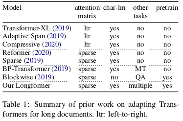
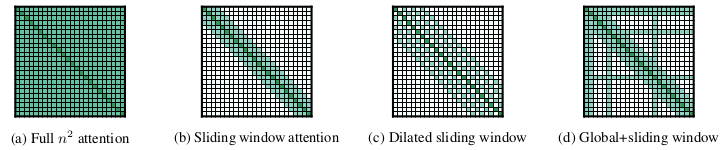
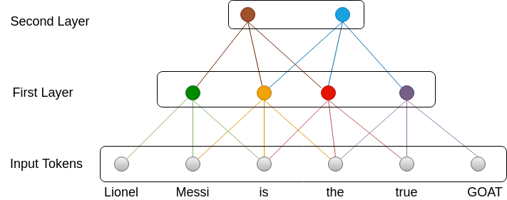
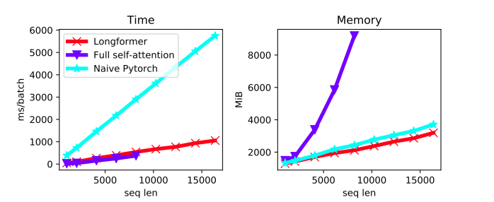
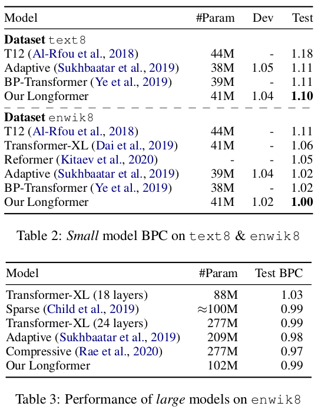
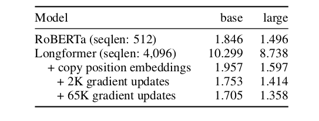
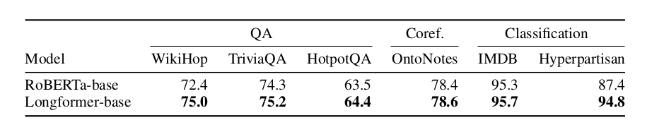

Introduction
- The NLP world had its ImageNet moment with the introduction of the Transformer in the paper Attention is All you Need.
- The ability to be able to process multiple words/tokens in parallel and train models without labeled data(using self-attention) led to the creation of multiple models which gave us SOTA results on many interesting tasks such as Question Answering, Summarization, etc.
- However, the biggest drawback is the Transformer architecture is the limitation it has on the number of tokens it can process at a once, due to exponentially increasing memory and compute requirements(typically about 512 tokens), causing the performance to deteriorate over large documents.
- Longformer by the team at Allen AI aims to address this problem and demonstrate it’s application to do transfer learning for large documents.
- Other approaches to are described in recent work such as Transformer XL, Blockwise, Reformer, etc. Their characteristics are mentioned below:

Key Contributions
- Transformers are expensive because of the massive matrix operations involved in the self-attention step. Since each token can attend to every other token in the given input, we get a runtime of \(O(n^2)\), where \(n\) is the sequence length(typically 512 tokens).
- LongFormer aims to solve this using a form of sparse attention and reducing the operational complexity to \(O(n)\). They achieve this using the concept of the sliding window and dilated sliding window.
- The authors also show how this attention pattern can be modified (using dilation and global attention) on a per-task basis, thereby allowing us to use a single model for all tasks rather than creating task-specific architectures.
Attention Patterns
- The attention patterns implemented are as follows: 
Sliding Window Attention
- TLDR : Similar to kernels for CNN which apply a matrix operation to a set of pixels and move onto the next set, apply attention to tokens in current window only.
- In this, we change the attention objective to only focus on the tokens that occur in a context window \(w\).
- Each token will be able to attend to \(\frac{1}{2}w\) number of tokens to it’s left and right.
- Question: But doesn’t this limit the number of tokens being taken into account to only the tokens in the window?
- Yes, it does. This is why we stack multiple layers of self-attention. As shown in the image below, the green neuron learns from the first 3 tokens(Lionel, Messi, is). However, the brown neuron learns from the green, yellow, and red neuron, who together learn from the first 5 tokens. This way, we can apply attention to long sequences(Lionel, Messi, is, the, true).
- As with the CNN, we will have \(l\) layers to this sliding window attention(multi-head attention) implemented to learn low level and high-level features. A balance should be found between the number of layers \(l\)(efficiency) and the window size \(w\)(model representation capacity).

Pros: Reduces computation from \(O(n^2)\) to \(O(n*w)\) i.e the computation complexity will only scale linearly now.
Cons: To learn dependencies for a large sequence, we would either have to increase the window size \(w\) or increase the number of layers \(l\), both of which will cause an increase in the amount of memory and processing power required to train and test the model.
Dilated Sliding Window
TLDR: Use dilation instead of window attention i.e for some particular window size, take alternate elements while performing self-attention.
To solve the problem for long sequences, the authors propose that instead of considering all tokens in window \(w\), consider alternate(or any number \(d\))tokens instead. The range of tokens will now be \(l * d * w\), which will be large for even a small value of \(d\).
Pros: This small change will allow us to cover a wider range of tokens without significant changes to the architecture.
Cons: Skipping tokens might lead to loss of information in the lower layers which will get propagated to the higher layers. This will lead to unstable training and poor model performance.
Global Attention
- TLDR: Use full attention for certain tokens depending on the task. This is an engineering choice.
- In BERT style models, optimal representation for input sequence varies by task.
- For MLM, local context is used to predict the masked word
- For classification, [CLS] token is used.
- For QnA, the question is concatenated with the document to help model learn through self-attention.
- The windowed and dilated attention is not flexible enough to learn task-specific representations.
- Hence, for some tokens enable global tokens i.e at these tokens, all tokens in the sequence can attend to it. For classification, enable global attention on the [CLS] token.
- Pros:
- Adding global attention improves performance for specific tasks. Since these tokens are limited in number, the complexity still stays at \(O(n)\).
- It also increases the representational power of the model.
Linear Projections
TLDR: Use two sets of Q,K and V matrices, one for sliding window attention, one for global attention.
Attention is defined as:
\[ \begin{aligned} Attention(Q,K,V) = softmax(\frac{QK^T}{\sqrt{d_k}})V \end{aligned} \]
We will use two different sets of Q,K and V matrices for sliding window and global attention.
\(Q_g\), \(K_g\), \(V_g\) are initialized with \(Q_s\), \(K_s\), \(V_s\)
CUDA Kernels
- One of the important and interesting contributions of this paper is the implementation of matrix multiplication via CUDA kernels.
- In the dilated sliding window, the matrix formed is called a band matrix i.e there are diagonal bands of indices that have values and the other values are 0.
- Implementing matrix operations for band matrices using native for loops and via frameworks is not easy and optimized.
- The authors have provided custom CUDA kernels implemented using TVM for this banded matrix operations.
- As demonstrated in the image below, the custom CUDA kernels have a significant impact on the time and memory consumption of the model. The kernels and implementation for the longformer are available here. 
LongFormer Performance
Autoregressive Language Modelling
- Estimate the probability of a token given its previous tokens/characters in an input sequence.
- It is a fundamental task in natural language and all previous work use this task as their primary evaluation measure.
Attention Pattern
- In multi-head attention, each head computes a different score.
- To get a good representation of all tokens, the authors propose that normal sliding window attention can be used for the lower layers, and dilated sliding window attention can be used the higher layers(top 1-2 layers).
- The reasoning for this approach is that in the lower layers, the local context is more important, and in the upper layers, the global context is more important. Hence, it is acceptable to skip over a few tokens in the upper layers.
Experimental Setup
Task and Datasets
- The authors focus on character level modeling because the sequences are naturally longer than those of word-level language modeling.
- Datasets that were used are text8 and enwik8.
Training and Evaluation
- The model was trained in multiple phases.
- The window and sequence length was increased in each phase. This is to allow local context from tokens to be learned efficiently.
- Overall five training phases used, starting from the token length of 2048 to 23040 (45x more than vanilla BERT).
- Two models were created for evaluation:
- Small model: 12 layers, 512 hidden size
- Large model: 30 layers, 512 hidden sizes (2.5x larger)
- During the model evaluation, the model can run on a sequence length of 32256(63x more than vanilla BERT).
Results

- Longformer achieves SOTA using the small models with BPC of 1.10 and 1.00 for text8 and enwik8.
- The large model was only tested on enwik8 due to the computational cost of training.
- It’s also important to note that, while the large model did not achieve SOTA, it performs much better than it’s counterparts who have almost 2x more parameters.
Pretraining and Finetuning
- The LongFormer is trained to solve the tasks of classification, QA, and coreference resolution.
- It is trained with MLM objective.
Copy initialization trick
- Since the MLM objective pretraining objective is expensive, the authors continue to train from the checkpoints of the RoBERTA model.
- The attention mechanism is replaced with the new attention module.
- For the position embeddings:
- RoBERTA has position embeddings for 512 tokens.
- LongFormer can support position embeddings for 4096 tokens(larger for larger GPU)
- To use the weight checkpoints from RoBERTA, instead of random initialization, copy the 512 position embeddings multiple times as analysis of the BERT attention heads showed a strong learned bias to attend to the local context.
Pretraining
- Apart from the datasets(Books corpus + English Wikipedia) used in RoBERTA, \(\frac{1}{3}^{rd}\) Realnews dataset was added with tokens larger than 1200.
- Both models(small and large) trained with varying gradient updates.

Task-Specific Results
- Main results are summarized below: 
LongFormer Task Specific Results - The performance gain is high for tasks that require long contexts such as WikiHop and Hyperpartisan.
- For TriviaQA, the improvement is small because the local context is often sufficient to answer the given question.
- Similarly, gains in IMDB and OntoNotes are small(because of majority short reviews for IMDB and low distance between any two mentions for OntoNotes).
- However, the LongFormer large model achieves SOTA on WikiHop and TriviaQA.
- Using the large model also improves performance on HotpotQA.
Conclusion
- Overall, this was a fun read. The changes introduced in the attention mechanism are fairly simple but they yield very high-performance gains, paving the path to make these models useful in future applications.
- Personally, and also as noted by the authors, I would like to see the performance of the LongFormer on the summarization task.